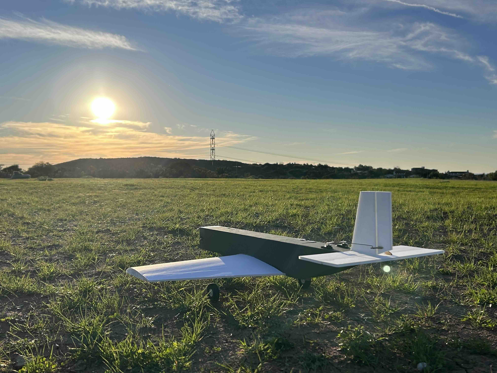
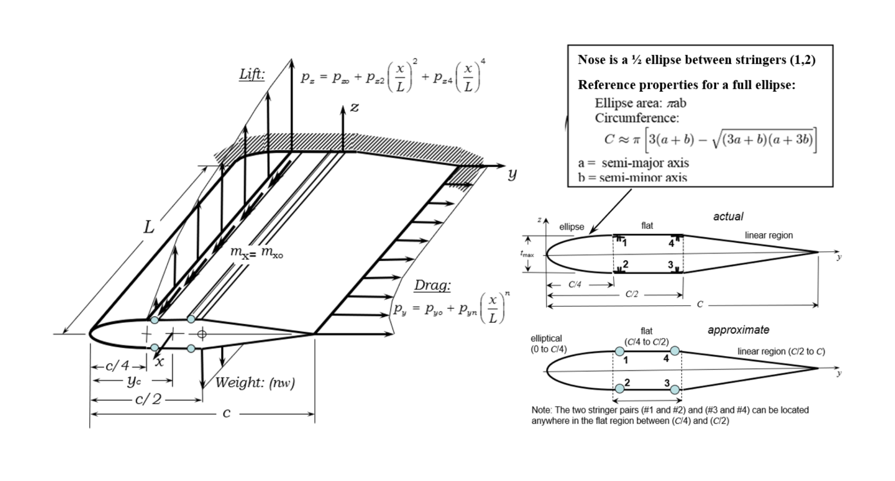
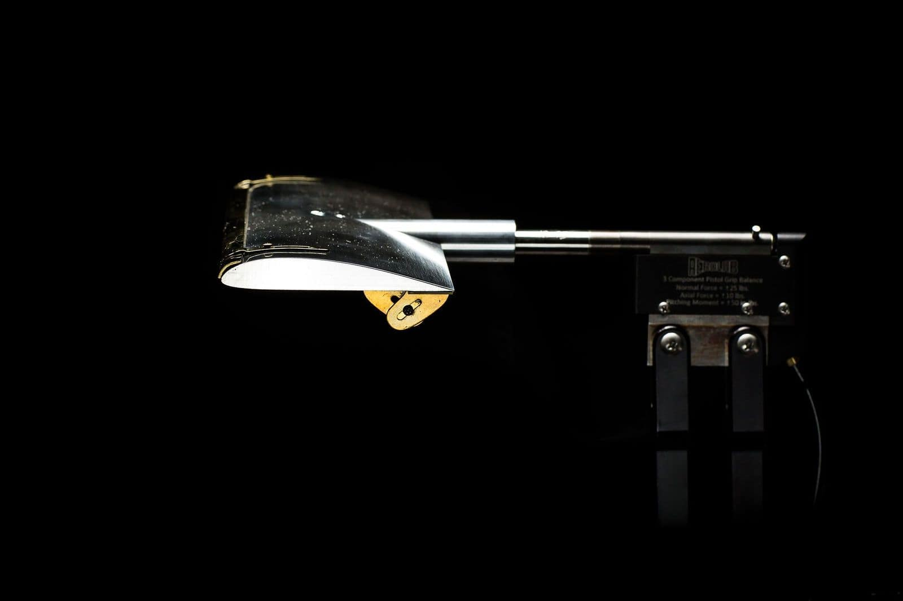
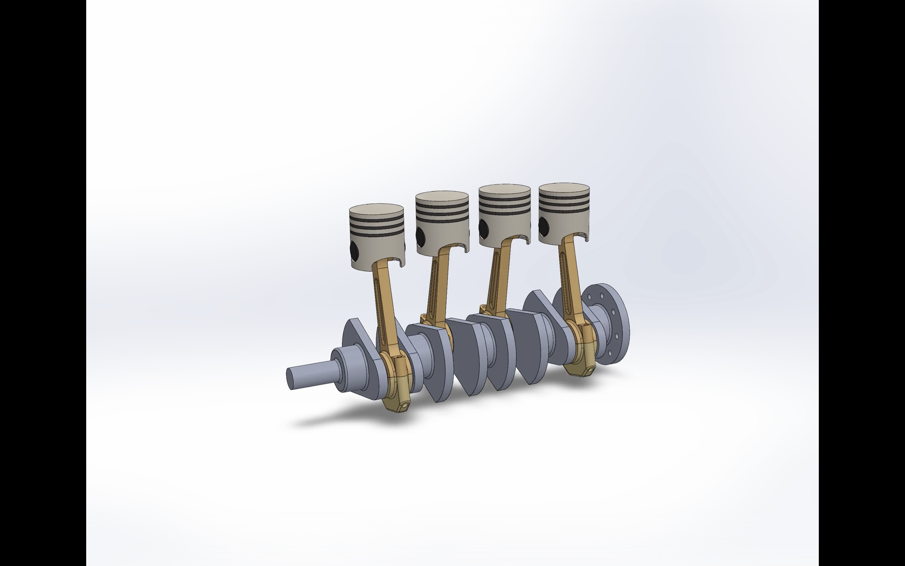

Skills
Timeline
Sep 2022
UC San Diego — B.S. Aerospace
Built fundamentals across aerodynamics, structures, propulsion, and controls.
Sep 2023
ITS Service Desk Technician
Resolved campus-wide technical issues and improved support workflows.
May 2025
Promoted — Service Desk Lead
Led team operations, triage, and incident response for complex outages.
Sep 2025
Design-Build-Fly (DBF)
Supported aero configuration work, CAD iteration, and build/flight-test coordination on a student RC aircraft team.
Present
Senior Design Capstone
Leading BWB aircraft concept work: propulsion integration, aerodynamics, and structural assessments.
Experience

Contributed to UCSD’s Design-Build-Fly effort by supporting aerodynamic configuration decisions and practical build-to-test iteration on a student RC aircraft. Performed airfoil screening and low-fidelity analysis (XFOIL/XFLR5) to compare lift/drag trends under Reynolds-number constraints typical of competition-scale aircraft, and used results to inform geometry choices and stability targets. Helped translate analysis into CAD updates and manufacturing-ready geometry, then supported flight readiness through preflight checks and post-flight review. Worked with onboard telemetry limited to battery voltage and link/signal strength to improve operational reliability and reduce “unknowns” during test days.
Progressed from Service Desk Technician to Lead, taking responsibility for shift operations, escalation triage, and technician support during high-impact incidents. Mentored newer technicians, improved consistency in ticket handling through clearer triage routines and documentation, and served as a primary escalation point for complex account, device, and software issues. Coordinated with higher-tier teams when incidents required deeper network or systems support, focusing on fast communication, accurate handoffs, and restoring service with minimal user downtime.
Projects
Concept Blended Wing Body
Ultra-efficient commercial aircraft concept.
View Report & Model →
Wing Spar Analysis
MATLAB Structural Tool.
View Full Report →
Wind Tunnel Testing
Clark Y-14 Airfoil Aerodynamics.
View Full Report →
4-Piston Engine CAD
Mechanical Design & Kinematics.
View Report & Model →
Lab Operations
Acoustics & Thermodynamics.
View Full Reports →Aspirations
My long-term goal is to propel humanity into the next age of space exploration by contributing to the development of advanced astronautical and space vehicles. I aim to work at the forefront of spacecraft design, system integration, and propulsion innovation, helping create technologies that expand human presence beyond Earth. I’m especially motivated by cutting-edge vehicle concepts and design decisions informed by disciplined trade studies, simulation, and test-driven iteration.
I’m exploring Master’s programs in Europe that allow me to deepen my expertise in flight performance, propulsion, and system-level aerospace engineering, while remaining closely connected to the broader space ecosystem. As an Argentine and Italian citizen fluent in English, Spanish, and French, I thrive in international technical teams — and I want my career to be defined by high-impact engineering work that advances humanity’s capabilities in space.